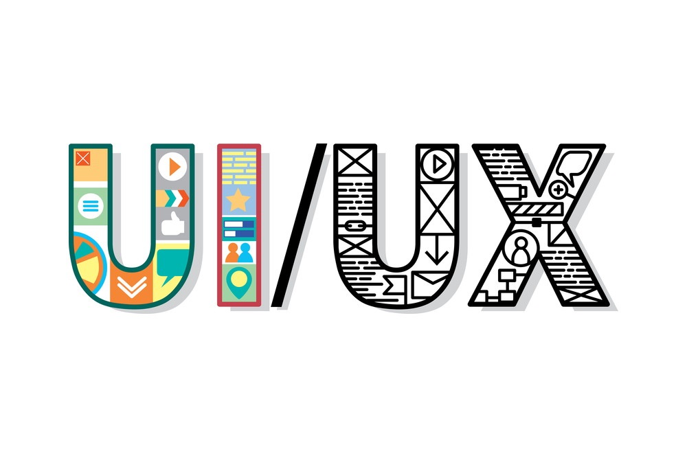

Contact Now
Welcome to my little corner of the interwebs. My name is Jennifer. I like to move with purpose. People are my passion and I want to make products that work for them. My process focuses on research, user experience, usability, & results.
Q & A
What made you decide to go into UX Design?
UX Design pairs well with my undergraduate studies and current skill set. I honestly couldn't believe this is an actual job! I'm so excited to keep growing and learning in this field.
What part of UX are you most interested in?
Research. Research. Research. Visual Design is pretty fun too.
Who built your website?
Designing for yourself is a challenge of it's own. With a lot of help and guidance from my teachers and peers I was able to build this bad boy.